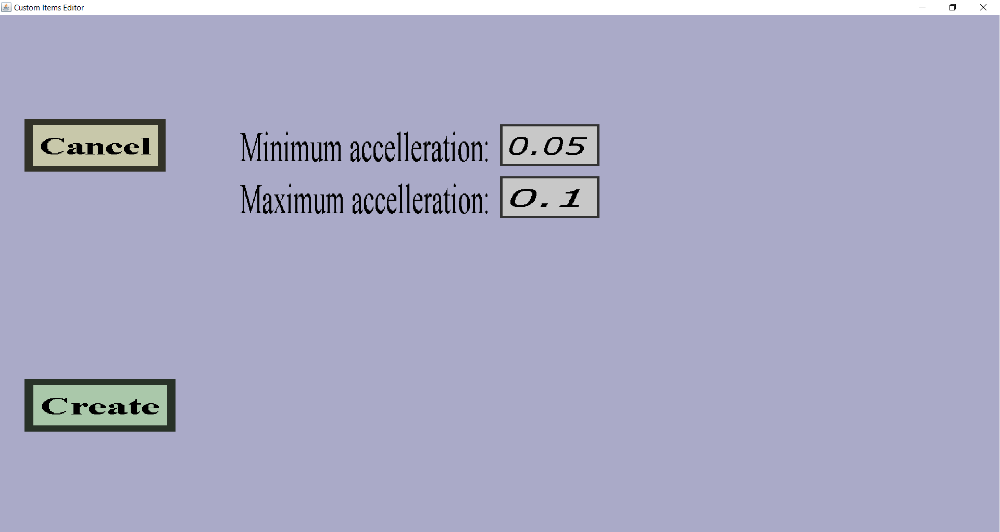

This menu can be used to add or modify a straight accelleration projectile effect.
These effects can be used to make projectiles speed up or slow down during its flight.
This effect is useless as impact effect and only useful as in-flight effect.
The menu should look like this:

There should be a 'Cancel' button and an 'Apply' or 'Create' button.
Also, there should be edit fields for the minimum and maximum accelleration.
-
The 'Cancel' button will take you back to the effects overview you came
from without keeping any changes or adding the new effect to the list.
-
If you are editing an existing accelleration effect, there will be an 'Apply' button which will take
you back to the effects overview you came from while keeping all changes
you made in this menu.
-
If you are adding a new accelleration effect, there will be a 'Create' button which will take
you back to the effects overview you came from and add this new command
effect to the effect list.
-
The edit fields are for the minimum and maximum accelleration.
Each time the effect is performed, 'the accelleration force' will be randomly chosen between the Minimum
and Maximum that you wrote in the edit fields. The bigger this value, the faster the projectile will
accellerate. If the accelleration is negative, the projectile will slow down instead (or even start
moving backwards). To see what is the 'right' accelleration value, it's probably easiest to just try it
out.